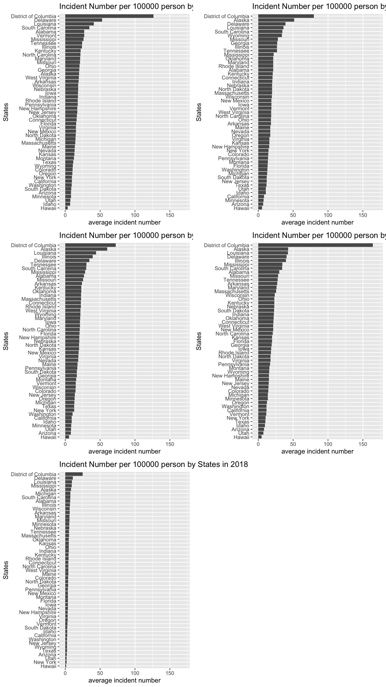
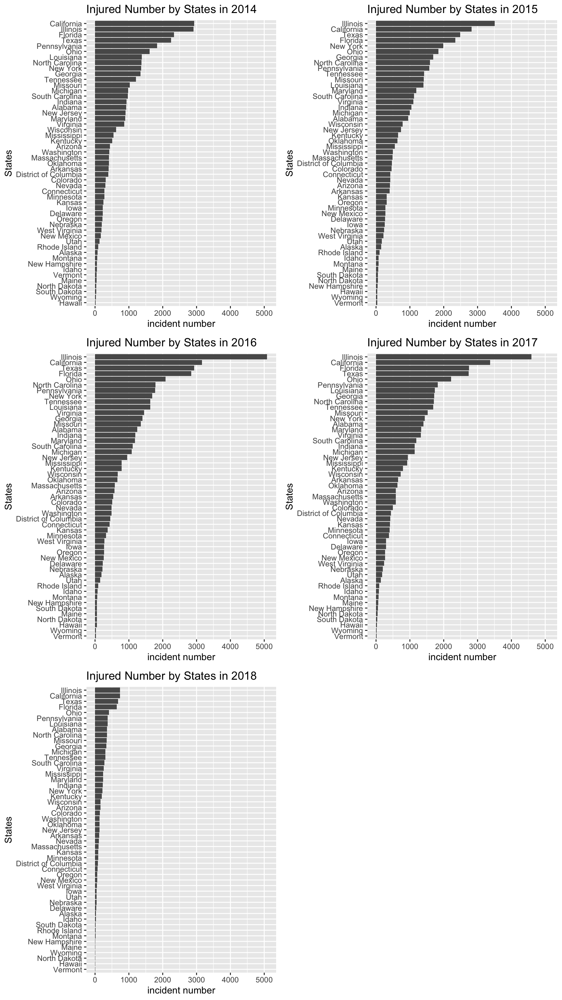
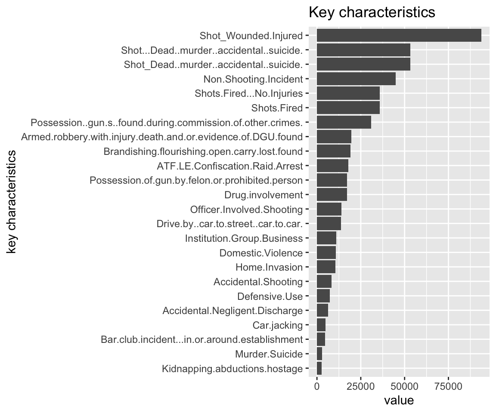

Chapter 5 Results
5.1 Exploring the Gun Violence Data
We start from an interesting question: Where is the least gun threaded state in the US? Then we would like explore the gun violence data, hoping to find the answers from sub questions.
5.1.1 How many gun violence incidents happened every year in each state?
We calculate the the sum of of incidents number of each state from 2014 to 2018, the plots are shown below,

The bar in 2018 is shorter than the bars in other years, it’s because we only have the record from Jan to March in 2018. We could find that in 2014 and 2018, California has the most incident number; while in 2015, 2016 and 2017, Illinois has the most incident number. But, does the large number comes from the large population? Maybe it’s better to calculate the incident number per 100000 person. The plots are shown below,

The resultes turns out very different, District of Columbia moves to the top of the bar from 2014 to 2018; Alaska becomes the second most in 2015 and 2016. It might because the population number in these states are quite small.
5.1.2 How many people get injured?
The gun violence may includes mass shooting. In every incident, the number of people who are injured or killed are different, we want to explore this number. The plot is shown below,

The bar in 2018 is shorter than the bars in other years, it’s because we only have the record from Jan to March in 2018. We could find the pattern is quite similar to the pattern of incident number, Illinois has the largest number from 2015 to 2018; California has the largest number in 2014. Then we would like to look at the this number per 100000 person. The plots are shown below,

This pattern is also similar to the pattern of incident number per 100000 person, District of Columbia is at the top of the bar chart from 2014 to 2018.
5.1.3 Where does these gun violence happen?
Then, we zoomed in the map to find the exact location of each gun incident. We ploted each event as a red dot on the map. The following plot shows the gun violence in California in 2013,
qmplot(lon,lat,data=data_new,colour=I("red"),zoom=9,size = I(0.9),alpha=.3,maptype = "toner-lite",main = "Gun violence in California in 2013")+
theme(legend.position="none")## Map tiles by Stamen Design, under CC BY 3.0. Data by OpenStreetMap, under ODbL.## 117 tiles needed, this may take a while (try a smaller zoom).## Warning: Removed 1 rows containing missing values (geom_point).
As we could see from this plot, the gun violence incident is clustered at cities and roads, which means that gun violences is mostly happen where people are.
5.1.4 Which kind of gun violence is the most common?
Then, we look at the type of each incident, which is represented by key characteristics of gun violence incidents. We sum the same kind of incidents from 2014 to 2018 in every state, the plot is shown below,
character_sum_df%>%filter(value>1000)%>%
ggplot(aes(x= fct_reorder(key, value) ,y=value))+
geom_bar(position = "dodge", stat = "identity")+
coord_flip()+
ggtitle("Key characteristics")+
xlab("key characteristics")
From the plot above, we could find that there are many different types of incidents. The most common type of incident is shot-wounded/injured, the second commen type of is shot-murder.
5.1.5 When does gun violence happen?
Then we would like to explore the data in time series. Does the gun viooence incidents are more likely to happen in sepcific time? we plot each gun violence incident by time from 2014 to 2018,
## `geom_smooth()` using method = 'loess' and formula 'y ~ x'
## `geom_smooth()` using method = 'loess' and formula 'y ~ x'## Warning: Removed 6 rows containing non-finite values (stat_smooth).## `geom_smooth()` using method = 'loess' and formula 'y ~ x'
The above plot shows the sum of incident number, number of killed and number of injured of each month from 2014 to 2018. We could find that there are some peaks in this plot. We are very surprised to find that peaks are always in summer, in june and August. We guessed that it might because people are easy to lose their mind when it’s hot.
5.2 Effects of Gun Possesion
Since the numbers of firearm possesions are different among states, it might have something to do with the gun violence.
5.2.1 How does the gun change rate influence the gun violence status?
5.3 Effects of GDP data
We also would like to find whether there is something to do with the ecnomic situation. We used GDP of each state to represent the economic situation.
GDP_2014 <- GDP_sub %>%
select(1,20)
gun_vio_n_2014 <- gun_vio_n %>%
filter(year=="2014")
GDP_2014 <- merge(GDP_2014,gun_vio_n_2014,by.x = "GeoName",by.y = "state")
p <- plot_ly(data = GDP_2014, x = ~X2014, y = ~total_TOLL,
marker = list(size = 10,
color = 'rgba(255, 182, 193, .9)',
line = list(color = 'rgba(152, 0, 0, .8)',
width = 2))) %>%
layout(title = 'Styled Scatter',
yaxis = list(zeroline = FALSE),
xaxis = list(zeroline = FALSE))
p## No trace type specified:
## Based on info supplied, a 'scatter' trace seems appropriate.
## Read more about this trace type -> https://plot.ly/r/reference/#scatter## No scatter mode specifed:
## Setting the mode to markers
## Read more about this attribute -> https://plot.ly/r/reference/#scatter-mode